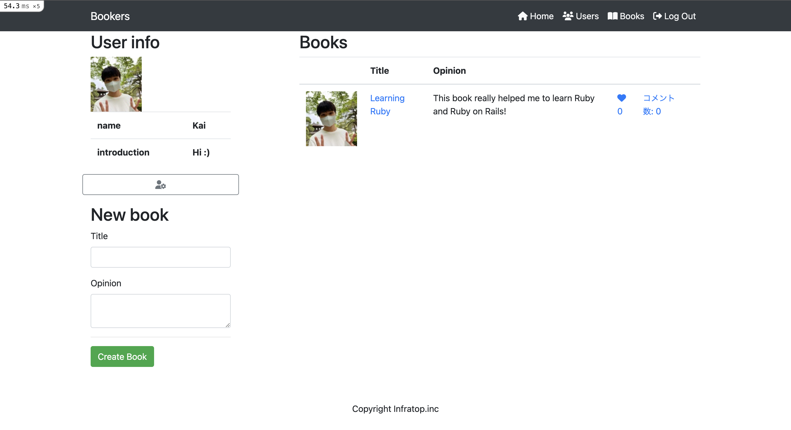
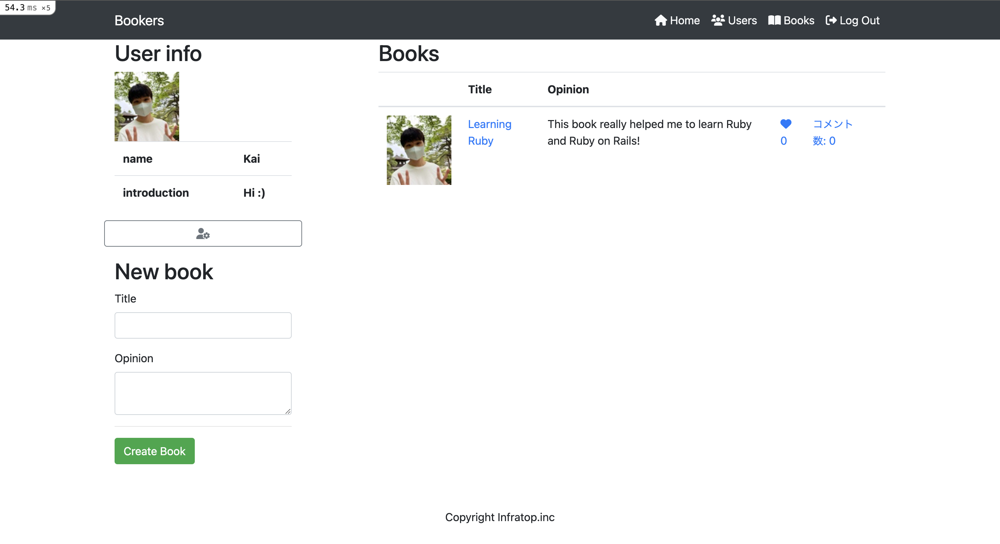

大学三年次の建築設計演習にて、大阪駅付近にあるお初天神の周りのビルを撤去し新たな複合施設を設計するという課題が与えられました。私はオフィスと同等の収益を見込むための収容率を確保する必要があると考えたため、観光客に向けた高層ホテルを設計しました。また、街の公益性に着眼し、お初天神との関連性を持たせるため、日本庭園の軸を応用した公園も設計しました。
この課題を通して、設計者として作りたいものと現実的に求められているもののバランスをとらなければいけないことを学びました。複合施設とはいえ、元々オフィスで収益を得ていた地域には同等またはそれ以上の価値があるものを建設する必要があり、必ずしも設計者が作りたいものを作れないという事実を学びました。
また、はじめてRevitというモデリングソフトをしようした課題でもあったため、与えられた短期間で新たなツールを学ぶことができ、自分にとって成長を感じられたプロジェクトでした。以前は住宅などの設計で簡易的な図面を作るためにはCADが効率的でしたが、大型の施設を作るためには緻密な設計より構造や素材がわかるプレゼンテーションの方が優れていると感じたため使用しました。結果的にはより効率的だったため、ものによってツールを変えることの大切さも学ぶことができました。


 
